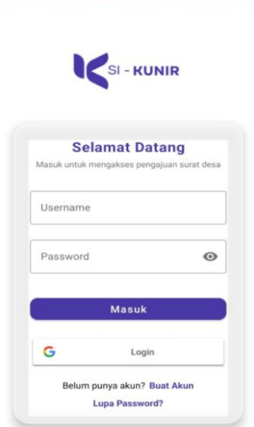

Deskripsi Project
SI KUNIR adalah sistem informasi desa modern berbasis web dan mobile yang membantu pengelolaan data desa, pencatatan kegiatan, dan monitoring proses administrasi secara efisien dan terstruktur.
Fitur Utama
- Input data desa
- Pencatatan kegiatan
- Monitoring proses administrasi
- Laporan data
Teknologi
Laravel
Java
MySQL
Firebase
Bootstrap
Preview
